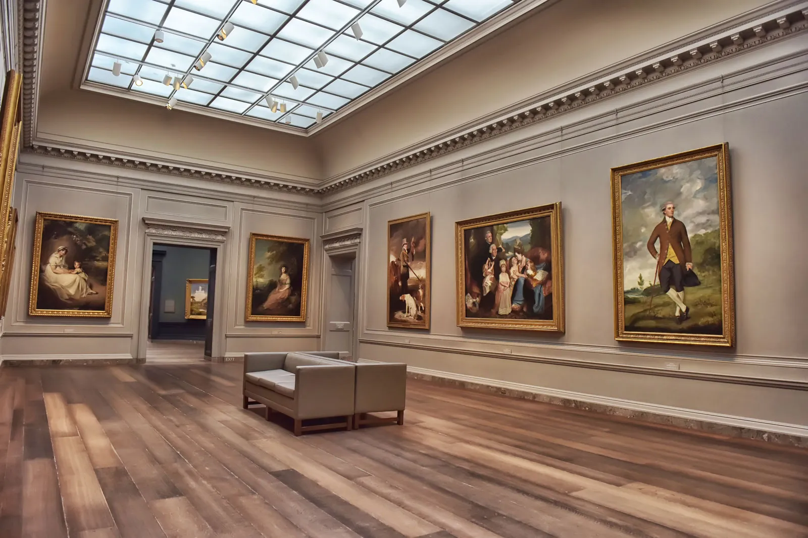

MonoMuse explores the connection between art and modern technology through immersive exhibitions and interactive experiences.
Our mission is to inspire curiosity and creativity by bringing together artists, technologists, students, and the community.
- Founded in 2018
- Opened first digital exhibition in 2019
- Hosted international artists in 2021
- Expanded education programs in 2023